Project Overview
Morphing some faces, changing races, and becoming one with my friend Keval.
Using the tool provided for labelling corresponding keypoints between faces, I took the portraits of myself and Keval, labelled them, and calculated the midway shape triangulation using the Delaunay package from the scipy library, which is shown in Part 2.
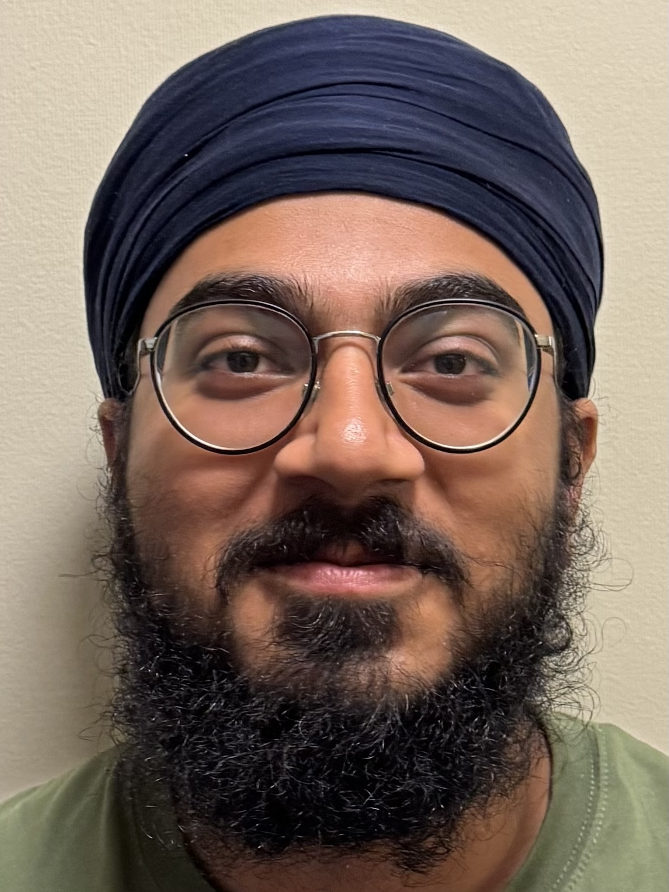
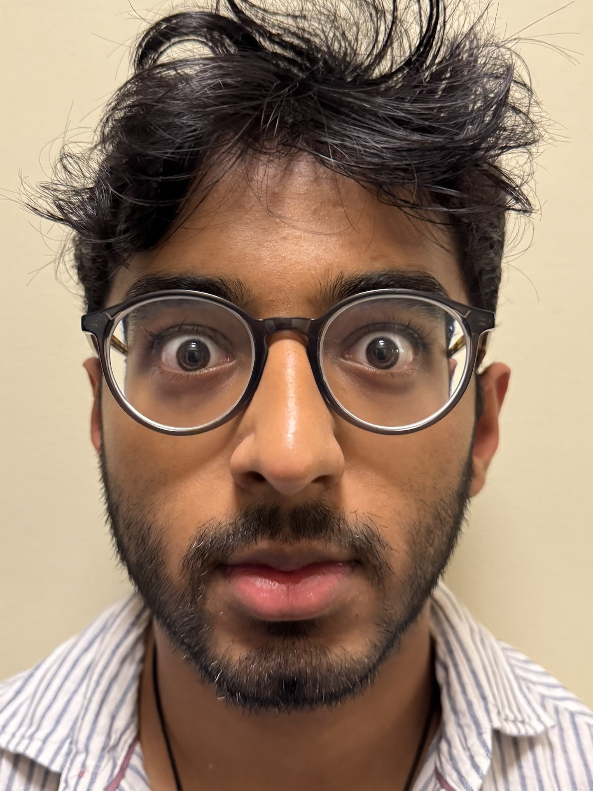
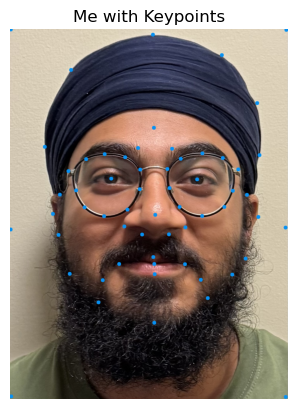
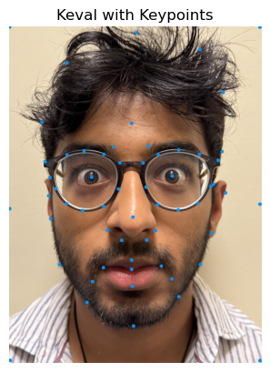
Part 2: Computing the "Mid-way Face"
The next step was calculating the "mid-way face" between both images. This was done by looping through each triangle in the triangulation and transforming them to their corresponding positions in the mid-way face.
To derive the affine transformation, we can set up a system of equations to map the three points of the source triangle to the three points in the mid-way triangle. The coordinates for each point in the mid-way triangle are defined as follows:
yi' = d * x + e * y + f
Since each triangle has three points, it yields get six equations in total, which are arranged in a matrix form. By solving this system, with the known start and mid-way points, we can calculate the affine transformation.
After obtaining the values of a, b, c, d, e, and f, these are placed into the affine transformation matrix. A value of 1 is added to the last column of the bottom row to convert it to homogeneous coordinates.
After warping all triangles, the individual pieces are combined into the mid-way image. Finally, to generate the "mid-way face," the pixel values from both original images are averaged, producing the resulting image.
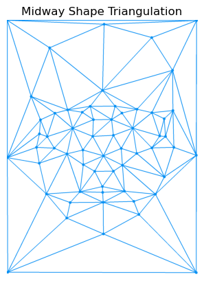
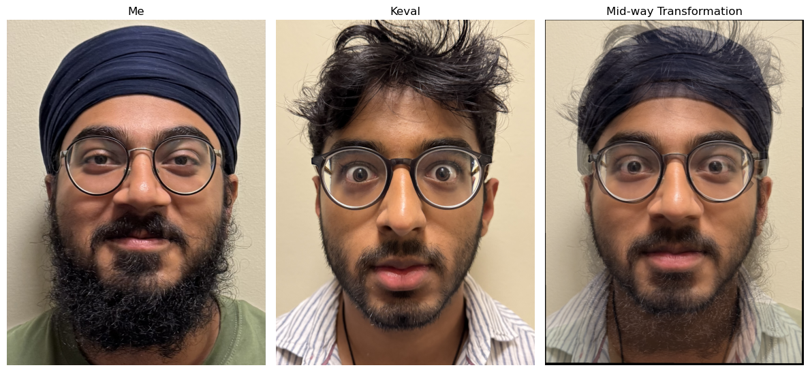
Part 3: The Morph Sequence
To generate a morph sequence between two faces, I applied the same morphing technique from Part 2, but vary the fraction of warping and blending. A parameter, ranging from 0 to 1, controls how much of each face is incorporated. When the parameter is set to 0, the output is the first face, and when it's set to 1, the output becomes the second face. Values in between create a gradual transition from one face to the other.

One limitation, due to unchangeable appearance-related attributes, is that the morph in top part of the image, as well as the beard/jaw area, is not as smooth as the rest of the face. This, unavoidably, is due to the fact that I wear a turban, while my friend does not, making it seem that his hair "fades" in from thing air. Similarly, it somewhat appears like my beard dissappears, since I had trouble using corresponding points on Keval in that region since he doesn't have a beard.
Part 4: The "Mean face" of a population
Using photos from this FEIFace Database, I used the aligned, spatially normalized dataset. After removing all smiling pics, I had 100 images of people with a neutral expression, which is what I averaged. Using the given 46 datapoints for each image which served as keypoints (landmarks), I determined and plotted the Delaunay triangulation for the average face.
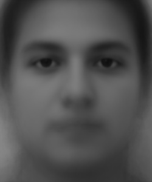
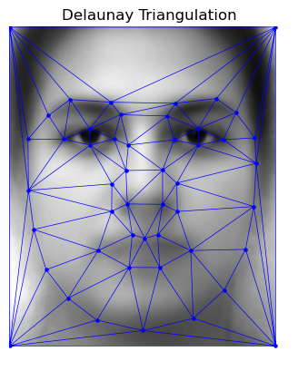
Warping Individual Faces to the Mean Face
Once the mean face was computed, I warped each face from the dataset to the mean face's geometry. Below are examples of individual faces warped to the mean face.
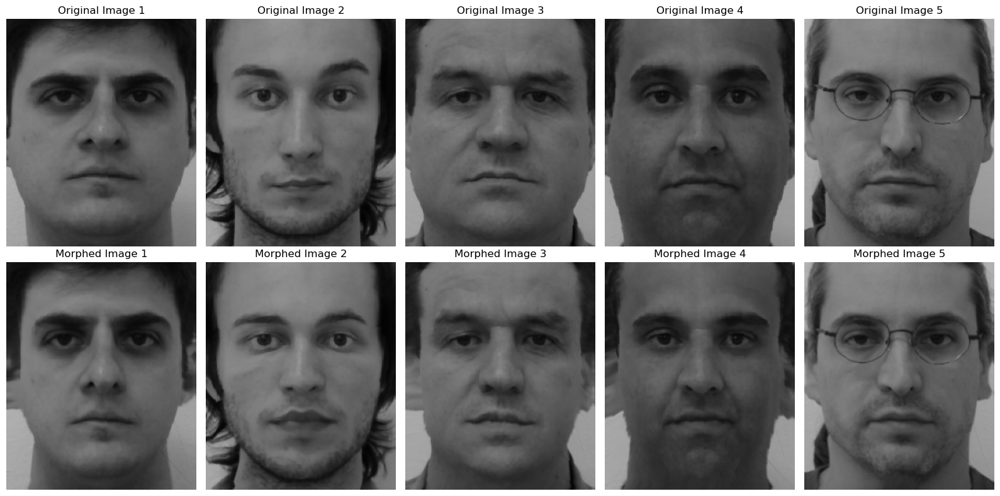
Warping My Face and the Mean Face
To warp my own face to the mean face, I first had to label my face with the same landmarks used for the faces in the database.
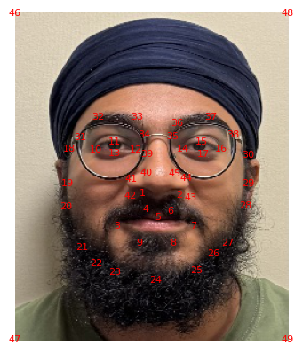
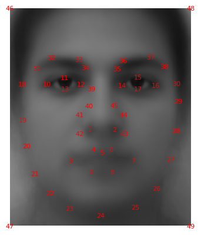
Below is the result of warping my face to the mean geometry and warping the mean face to my geometry. Evidently, due to me not being able to crop my turban and beard, the alignment could use some improvment. It is interesting to note how the mean face stretched at the forehead and neck, the areas that had few points and also vary the most visually between myself and the mean face.
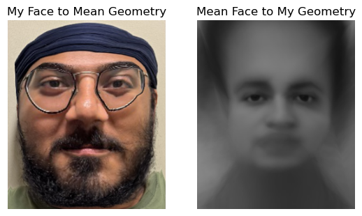
Part 5: Caricatures - Extrapolating from the mean
To create the extrapolation, I first calculated the difference between the keypoints on my face and those on the mean face. By adjusting this difference, I could either bring my appearance closer to or further from the mean face. This adjustment was controlled by a scaling factor, α, which ranged from 0.0 to 1.8. The transformation was applied using the following formula:
Using this approach, I was able to achieve the following results.
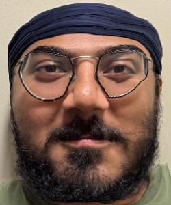
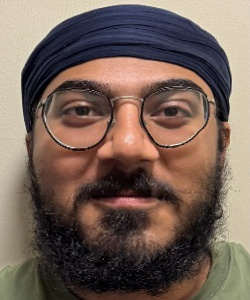
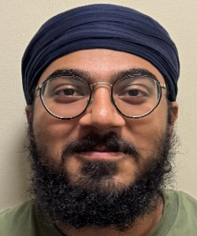
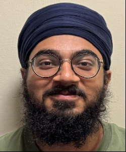
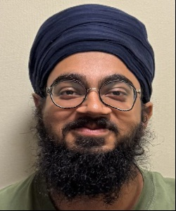
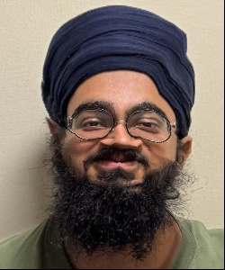
As mentioned earlier, due to variations in image cropping, even with a small alpha value, the outcome is an exaggerated result, with my face looking quite wide and rectangular. As the alpha increases, my face shrink horizontally and stretches vertically, resulting in my forehead and jaw getting bigger as the centre of my face shrinks.
B&W: Becoming Japanese
For the bells and whistles, I decided that I want to try to make myself look Japanese. I found a picture of the mean face of a group of Japanese men from this blog. I then cropped my image to try and match the size of the mean face of the Japanese group.
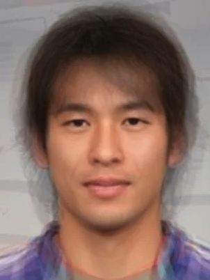
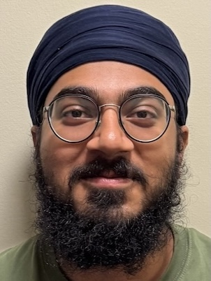
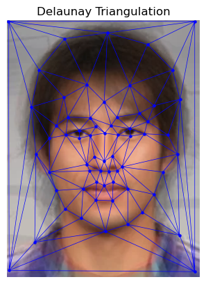
Using the same approach as before, I transformed my face to match the Japanese image. First, I applied the warping technique with a warp value of 0.7 and a dissolve value of 0, focusing solely on adjusting my facial structure to resemble the Japanese shape, which meant my face gets narrower. It also got slightly distorted due to cropping and alignment. Next, I blended the colors while maintaining my original shape by setting the warp value to 0 and the dissolve value to 0.5. This resulted in my beard fading out, since the Japanese average male image has no facial hair. Also, my skin tone changes somewhat accurately. Lastly, I combined both shape and color modifications with a warp value of 0.7 and a dissolve value of 0.5. These steps produced the following results:
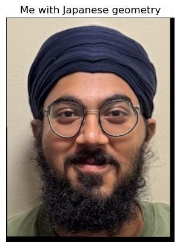
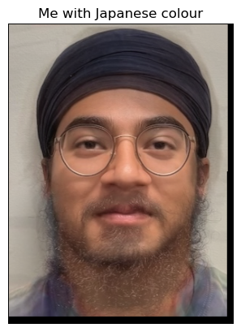
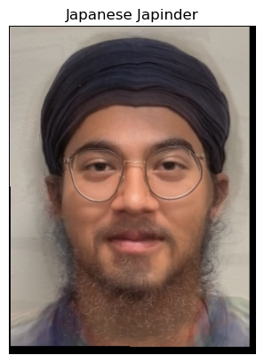
Acknowledgements
This project is a course project for CS 180 at UC Berkeley. Part of the starter code is provided by course staff. This website template is referenced from Bill Zheng.